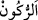

göstererek değil, bu mertebeleri kemâle erdirmek sûretiyledir.
Nitekim Şeyh Ebû Saîd’e:
“–Falanca su üzerinde yürüyor.” denince, Ebû Saîd şöyle demiş:
“–Balıklarla kurbağalar da öyle.”
“–Falanca havada uçuyor.” denince,
“–Kuşlar da” demiş.
“–Falanca bir anda doğuya ve batıya ulaşıyor.” denince,
“–İblis de öyle.” demiş.
“–Peki öyleyse sana göre kemale ermenin ölçüsü nedir?” demişler
Ebû Saîd şöyle cevap vermiş:
“–Zâhirî olarak yaradılanlarla, bâtınî olarak da Hak ile birlikte olmaktır.”
Bilesin ki özel olarak ezelî bir inâyete ve ilâhî bir cezbeye mazhar kılınanlar dışında
bütün nefisler, istikamet yolundan sapma eğiliminde yaratılmıştır.
Molla Câmî (k.s.) der ki:
Sâlikler Dost’un cezbesi olmadan bir yere ulaşamazlar
Bu yolda yıllarca çalışıp çabalasalar da
113. Sakın zulmedenlere meyletmeyin, sonra size ateş dokunur. Sizin Allah’tan
başka dostlarınız yoktur. Sonra size yardım da edilmez.”
“Sakın zulmedenlere” yani çok az da olsa zulmetmiş bulunanlara “meyletmeyin”
“
” az meyletmektir. Burada Hz. Peygamber (s.a.)’e ve O’nunla birlikte olan
mü’minlere hitap edilmektedir.
“Sonra” bu meyliniz yüzünden “size ateş” cehennem ateşi “dokunur.”
Şayet, kendilerinden bir kerre zulüm sâdır olmuş kişilere, az da olsa meyletmek bile
ateşin dokunmasına sebep oluyorsa kendilerinden defalarca zulüm sâdır olanlara hepten
meyletmek nelere sebep olur, varın siz düşünün!
“Sizin Allah’tan başka dostlarınız yoktur” sizi ateşten kurtaracak yardımcılarınız
yoktur. “Sonra” siz böyle bir durumda iken, yani yardımcınız yokken “size yardım da
edilmez.” Sonra Allah size yardım etmez, çünkü size azap edeceğine ve kökünüzü
kazıyacağına dâir hükmü geçmiştir.
“Sonra” lafzı, o azıcık meyilleri sebebiyle azâbı hak etmiş olmakla birlikte Allah’ın
onlara yardım etmesinin son derece uzak olduğunu göstermek için kullanılmıştır.
Bu âyet, zulmü yasaklama ve tehdid etme konusunda düşünülebilecek en etkili âyettir.